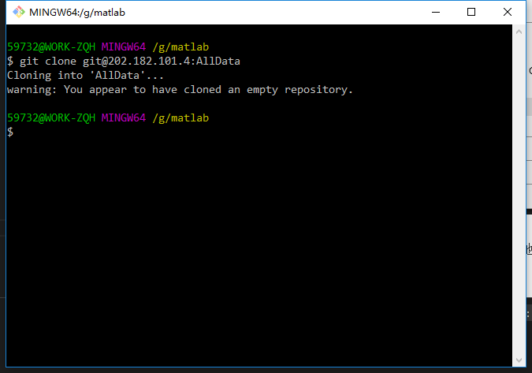

使用git下载项目数据
工具使用
为了避免大家需要测试数据，但是需要一个人不停的分发的烦恼。所以我决定使用git的方式让大家获取测试数据。
注册git
你所需要做的第一件事是创建一个免费账户。 直接访问 git官网，选择一个未被占用的用户名，提供一个电子邮件地址和密码，点击写着Sign up for GitHub的绿色大按钮即可。 
安装git
- 首先从github官网下载Windows版的git。然后按默认选项安装即可。
- 安装完成后，在开始菜单里找到“Git”->“Git Bash”，蹦出一个类似命令行窗口的东西，就说明Git安装成功！

- 安装完成后，还需要最后一步设置，在命令行输入：
sh git config --global user.name "Your Name" git config --global user.email "email@example.com"因为Git是分布式版本控制系统，所以，每个机器都必须自报家门：你的名字和Email地址。你也许会担心，如果有人故意冒充别人怎么办？这个不必担心，首先我们相信大家都是善良无知的群众，其次，真的有冒充的也是有办法可查的。（这里的名字和邮箱是你的git账户的名字和邮箱）
创建ssh秘钥
- 生成秘钥 大多数 Git 服务器都会选择使用 SSH 公钥来进行授权(本服务器也不例外)，系统中的每个用户都必须提供一个公钥用于授权，没有的话就要生成一个。打开
git cmd使用以下命令： 输入ssh-keygen命令后连续回车，即可在默认位置生成秘钥。sh $ ssh-keygen Generating public/private rsa key pair. Enter file in which to save the key (/Users/schacon/.ssh/id_rsa): Enter passphrase (empty for no passphrase): Enter same passphrase again: Your identification has been saved in /Users/schacon/.ssh/id_rsa. Your public key has been saved in /Users/schacon/.ssh/id_rsa.pub. The key fingerprint is: 43:c5:5b:5f:b1:f1:50:43:ad:20:a6:92:6a:1f:9a:3a schacon@agadorlaptop.local - 分发公钥 生成公钥的过程在所有操作系统上都差不多。 现在去确认一下是否已经有一个公钥了。SSH 公钥默认储存在账户的主目录下的 ~/.ssh 目录。进去看看： 输入命令：
sh cd ~/.ssh ls
id_rsa.pub就是公钥，将其中的内容复制发送给我即可。命令如下：cat ~/.ssh/id_rsa.pub之后将下面的内容复制发送给我即可。
下载数据
到这一步就可以开始数据的下载了。在想要的位置右键打开git cmd：  输入
输入git clone git@202.182.101.4:AllData就可以把云端文件下载到本地了。  接下来就可以查看文件了，当然现在还是空文件夹。